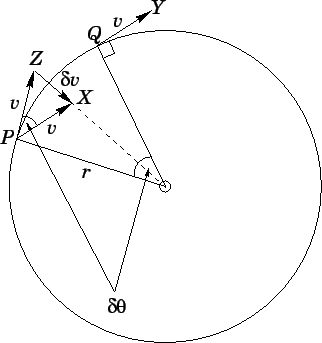
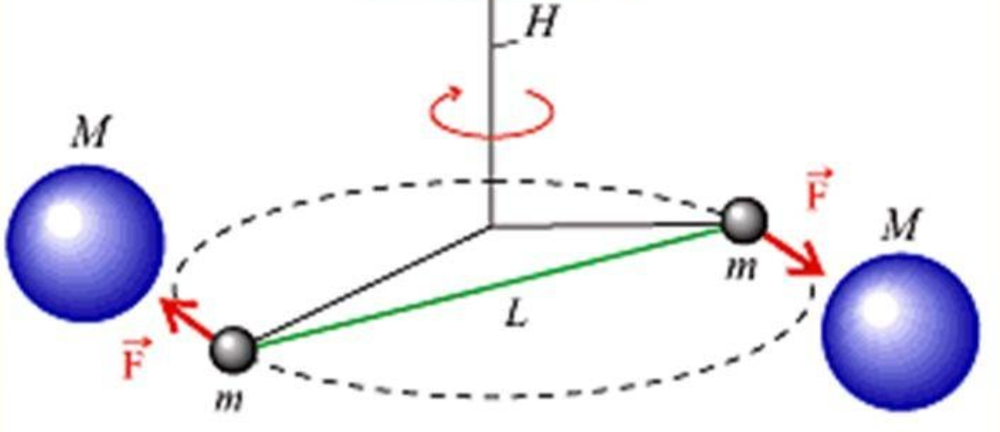

1. Физика — наука, занимающаяся изучением самых общих свойств окружающего нас материального мира.
2. Механика — наука об общих закономерностях движения тел.
Механика делится на три раздела:
Кинематика — описывает движение тела, не объясняя почему движение происходит.
Статика — отвечает на вопрос почему тело покоится.
Динамика — отвечает на вопрос почему тело приходит в движение.
3. Механическое движение — перемещение тел в пространстве относительно других тел с течением времени.
4. Виды движения. Механическое движение бывает 3 видов:
Поступательное — механическое движение системы точек, при котором отрезок, соединяющий любые две точки в теле, остаётся параллельным своему первоначальному положению, если тело не деформируется.
Вращательное — механическое движение системы точек, при котором все точки тела движутся по окружности, центры которых лежат на одной прямой, которая называется осью вращения.
Колебательное
5. Вращательное движение АТТ. — механическое движение абсолютно твёрдого тела, все его точки движутся по окружности, центры которых лежат на одной прямой, которая называется осью вращения.
Абсолютно твёрдое тело — идеальная модель тела, деформацией в котором, под действием внешних сил, можно пренебречь.
6. Колебательное движение: В конспекте нет определения.
7. Поступательное движение — механическое движение системы точек, при котором отрезок, соединяющий любые две точки в теле, остаётся параллельным своему первоначальному положению, если тело не деформируется.
8. Кинематика — раздел механики, изучающий способы описания движений и связь между величинами, характеризующими эти движения.
9. Материальная точка — модель тела, размерами которого в данных условиях движение можно пренебречь.
10. Свойства пространства:
Трёхмерность — пространство имеет три измерения
Однородность — в пространстве нет выделенных точек
Изотропность — в пространстве нет выделенных направлений
11. Свойства времени:
Однородность — в времени нет выделенных моментов
Одномерность — время не зависит от выбора системы отсчёта
Однонаправленность — время течёт в одном направлении
12. Система отсчёта — система координат, тело отсчёта и прибор для измерения времени.
13. Тело отсчёта — тело, которое мы принимаем за неподвижное, относительно которого рассматривается движение других тел.
14. Система координат — способ определения положения точки или тела с помощью чисел и других символов.
15. Координата точки на прямой — число, модуль которого равен расстоянию до начала отсчёта, а знак указывает, с какой стороны от начала отсчёта находится данная точка.
16. Координата точки на плоскости — расстояние от начала отсчёта, взятое с определённым знаком
17. Декартовая система координат — способ определения положения точки или тела на плоскости с помощью двух чисел: абсциссы \(x\) и ординаты \(y\). Основана на двух взаимно перпендикулярных координатных осях, пересекающихся в начале отсчёта.
18. Полярная система координат — способ задания положения точки на плоскости при помощи радиус-вектора \(r\) и угла \(\rho\).
20. Физическая величина — физическое свойство материального объекта, физического явления или процесса, которое может быть охарактеризовано количественно.
Скаляр — величина, каждое значение которой может быть выражено одним числом.
Вектор — направленный отрезок прямой.
21. Проекция точки — основание перпендикуляра, опущенного из данной точки на ось.
22. Проекцией вектора \(\vec{AB}\) на ось OX является число, равное величине отрезка \(A_1B_1\), где \(A_1\) и \(B_1\) — это проекции точек \(A\) и \(B\) на ось OX.
23. Радиус-вектор — вектор, начало которого совпадает с началом системы координат, а конец — с данной точкой.
Радиус-вектор характеризует положение тела в пространстве.
24. Перемещение — вектор, соединяющий начальное положение тела с его последним положением.
Перемещение характеризует движение тела.
25. Путь — скалярная физическая величина, численно равная длине траектории.
26. Траектория — линия, вдоль которой происходило движение тела.
27. Равномерное прямолинейное движение — движение, при котором траектория есть прямая линия и точка за любые равные промежутки времени проходит равные расстояния.
29. Средняя путевая скорость — скалярная физическая величина, равная отношению всего пути ко всему времени движения.
\[v_{\text{пут}} = \frac{s}{t}\]
Единица измерения: \([v] = [\text{м/с}]\)
Средняя путевая скорость показывает какой путь проходило тело за единицу времени в среднем.
30. Мгновенная скорость — векторная физическая величина, равная пределу отношения перемещения материальной точки к промежутку времени, за которое оно совершено, при стремлении этого промежутка к нулю.
\[\vec{v} = \lim_{\Delta t \to 0}\frac{\Delta \vec{r}}{\Delta t}\]
Единица измерения: \([v] = [\text{м/с}]\)
Мгновенная скорость в каждой точке траектории направлена по касательной к траектории.
Скорость характеризует скорость изменения радиус-вектора, то есть показывает как он изменялся за единицу времени.
31. Мгновенное ускорение — векторная физическая величина, равная пределу отношения изменения вектора скорости к промежутку времени, за которое изменение произошло, при стремлении этого промежутка к нулю.
\[\vec{a} = \lim_{\Delta t \to 0}\frac{\Delta \vec{v}}{\Delta t}\]
Единица измерения: \([a] = [\text{м/с}^2]\)
Мгновенное ускорение показывает быстроту изменения скорости.
32. Равноускоренное движение — механическое движение, при котором тело движется по прямой линии и за любые равные промежутки времени скорость тела изменяется на одинаковую величину.
Равноускоренное прямолинейное движение — прямолинейное движение с постоянным ускорением.
33. Основная задача кинематики: по известной зависимости ускорения от времени, координаты и скорости найти закон движения тела.
34. Годограф — кривая, которую описывает конец какого-либо вектора.
35. Годограф радиус-вектора — траектория движения тела (кривая, которую описывает конец радиус-вектора точки).
36. Годограф скорости — кривая, которую описывает конец вектора скорости.
Ускорение в каждой точке траектории направлено по касательной к годографу скорости.
37. Теорема Галилея (Закон кратных отношений): пути, пройденные точкой при равноускоренном движении из состояния покоя за 1-ю, 2-ю, 3-ю и последующие секунды, относятся как ряд нечетных чисел 1:3:5:…
38. Способы задания движения:
Координатный способ: положение точки в пространстве определяется тремя координатами изменение которых определяет закон движения точки.
Векторный способ: положение точки определяется её радиус-вектором.
Естественный способ: называется траектория точки, закон её движения по этой траектории, начало и направление отсчёта дуговой координаты.
39. Свободное падение — движение тела под действием силы тяжести при отсутствии силы сопротивления воздуха и действия других тел, кроме Земли.
🔬 40. Опыт Галилея
Наблюдения:
Галилей обнаружил, что шары одинакового диаметра, изготовленные из дерева, золота, слоновой кости, движутся по желобу с одинаковыми ускорениями \(a=\frac{2s}{t^2}\). Итак, ускорения не зависят от массы шаров.
Вывод:
Галилей доказал, что в отсутствие сопротивления воздуха время падения не зависит от массы тела — тела разных масс падают с одинаковым ускорением.
🔬 41. Опыт Ньютона
Ход эксперимента:
В стеклянную трубку помещают предметы разной массы и формы: дробинки, кусочки пробки, пушинки и т.д.
Если теперь трубку перевернуть, дробинка падает быстрее, за ней кусочки пробки, а пушинка — последней.
Но если выкачать воздух из трубки и создании вакуума оба предмета опускаются на дно одновременно.
Наблюдения:
Движение пушинки задерживалось сопротивлением воздуха, которое в меньшей степени сказывалось на движении, например, пробки.
Когда же на эти тела действует только притяжение Земли, то все они падают с одинаковым ускорением.
Вывод:
Земля сообщает всем без исключения телам одно и то же ускорение. Если сопротивление воздуха отсутствует, то вблизи поверхности Земли ускорение падающего тела постоянно.
42. Радиус кривизны — радиус окружности, которая касательно совпадает с траекторией в бесконечно малом участке в этой точке.
В конспекте нет определения.
43. Нормальное ускорение — векторная физическая величина, составляющая вектор ускорения, равная пределу отношения нормальной составляющей изменения вектора скорости к промежутку времени, за которое это изменение произошло, при стремлении этого промежутка к нулю.
\[\vec{a}_n = \lim_{\Delta t \to 0}\frac{\Delta\vec{v}_n}{\Delta t}\]
\[|\vec{a_n}| = \frac{v^2}{R}\]
Единица измерения: \([a_n] = [\text{м/с}^2]\)
Нормальное ускорение характеризует быстроту изменения направления скорости.
Чтобы выяснить смысл нормального ускорения, будем рассматривать движение, при котором не меняется модуль скорость, то есть траекторией будет окружность:

\[\begin{align*}
&\text{Проведём хорду } PQ. \\
&\vec{v_0} \perp OP \\
&\vec{v}(t) \perp OQ \\
&\text{Проведём вектор } \Delta\vec{v}. \\
&\text{Рассмотрим треугольник } POQ \text{ и } PZX: \\
&\angle ZAX = \angle POQ \text{ по лемме об остром угле при взаимно перпендикулярных сторонах} \\
&\frac{PZ}{OP} = \frac{PX}{OQ} \text{ из равнобедренности этих треугольников}. \\
&\text{Значит, } \triangle POQ \sim \triangle PZX. \\
&v = |\vec{v_0}| = |\vec{v}(t)| \Rightarrow \vec{a} = \vec{a}_n \Rightarrow \Delta\vec{v} = \Delta\vec{v_n} \\
&\frac{|\Delta\vec{v}|}{PQ} = \frac{v}{R} \\
&|\Delta\vec{v}| = \frac{v}{R}PQ \\
&|\vec{a_n}| = \lim_{\Delta t \to 0}\frac{|\Delta\vec{v_n}|}{\Delta t} = \lim_{\Delta t \to 0}\frac{|\Delta\vec{v}|}{\Delta t} = \lim_{\Delta t \to 0}\frac{v}{R}\frac{PQ}{\Delta t} = \frac{v}{R}\lim_{\Delta t \to 0}\frac{PQ}{\Delta t} \\
&\text{Тогда при } \Delta t \to 0 \text{ хорда } PQ \to \text{ дуга } PQ \\
&|\vec{a_n}| = \frac{v}{R}\lim_{\Delta t \to 0}\frac{PQ}{\Delta t} = \frac{v}{R}v = \frac{v^2}{R} \\
&|\vec{a_n}| = \frac{v^2}{R} \\
&\beta = \frac{180^\circ - \Delta\theta}{2} \Rightarrow \lim_{\Delta t \to 0}\beta = \lim_{\Delta t \to 0}\frac{180^\circ - \Delta\theta}{2} = 90^\circ
\end{align*}\]
44. Тангенциальное ускорение — векторная физическая величина, составляющая ускорение, равная пределу отношения тангенциальной составляющей изменения вектора скорости к промежутку времени, за которое это изменение произошло, при стремлении этого промежутка к нулю.
\[\vec{a}_\tau = \lim_{\Delta t \to 0}\frac{\Delta\vec{v}_\tau}{\Delta t}\]
Единица измерения: \([a_\tau] = [\text{м/с}^2]\)
Тангенциальное ускорение характеризует быстроту изменения модуля скорости.
Разложение \(\Delta\vec{v}\) на тангенциальную и нормальную составляющие
Если \(\vec{a}_\tau \uparrow\uparrow \vec{v}\), то тело ускоряется.
Если \(\vec{a}_\tau \uparrow\downarrow \vec{v}\), то тело замедляется.
45. Относительность движения — все кинематические характеристики зависят от выбора системы отсчёта.
46. Принцип относительности Галилея — все законы механики одинаковы во всех инерциальных системах отсчёта.
47. Абсолютная скорость точки — скорость точки в неподвижной системе отсчёта, равная геометрической сумме относительной скорости точки и переносной скорости точки.
\[\begin{align*}
&\frac{\Delta\vec{r}_{\text{абс}}}{\Delta t} = \frac{\Delta\vec{r}_{\text{отн}}}{\Delta t} + \frac{\Delta\vec{r}_{\text{пер}}}{\Delta t} \\
&\lim_{\Delta t \to 0}\frac{\Delta\vec{r}_{\text{абс}}}{\Delta t} = \lim_{\Delta t \to 0}\frac{\Delta\vec{r}_{\text{отн}}}{\Delta t} + \lim_{\Delta t \to 0}\frac{\Delta\vec{r}_{\text{пер}}}{\Delta t}
\end{align*}\]
\[\vec{v}_{\text{абсолютная}} = \vec{v}_{\text{относительная}} + \vec{v}_{\text{переносная}}\]
где \(\vec{v}_{\text{абс}}\) — скорость точки в неподвижной системе отсчёта; \(\vec{v}_{\text{отн}}\) — скорость точки в подвижной системе отсчёта; \(\vec{v}_{\text{пер}}\) — скорость подвижной системы отсчёта относительно неподвижной системы отсчёта.
48. Ускорение абсолютное — ускорение точки в неподвижной системе отсчёта, равное геометрической сумме ускорения точки в подвижной системы отсчёта и ускорения подвижной системы отсчёта относительно неподвижной системы отсчёта.
\[\vec{a}_{\text{абсолютное}} = \vec{a}_{\text{относительное}} + \vec{a}_{\text{переносное}}\]
где \(\vec{a}_{\text{абс}}\) — ускорение точки в неподвижной системе отсчёта; \(\vec{a}_{\text{отн}}\) — ускорение точки в подвижной системе отсчёта; \(\vec{a}_{\text{пер}}\) — ускорение подвижной системы отсчёта относительно неподвижной системы отсчёта.
*Верно только для поступательного движения.
49. Угол поворота тела — вектор, модуль которого равен углу, на который повернулось тело, а направление определяется правилом правого винта.
50. Правило правого винта: Если правый винт вращать по направлению вращения тела, то поступательное движение винта укажет направление вектора угла поворота.
51. Радианная мера угла — отношение длины дуги окружности к радиусу этой окружности.
\[\varphi = \frac{s}{r}\]
1 радиан — угол, соответствующий дуге, длина которой равна радиусу окружности, которой принадлежит эта дуга.
52. Мгновенная угловая скорость — векторная физическая величина, равная пределу отношения угла поворота к промежутку времени, за который совершился этот поворот, при условии, что этот промежуток стремится к нулю.
\[\vec{\omega} = \lim_{\Delta t \to 0}\frac{\vec{\Delta\varphi}}{\Delta t}\]
53. Мгновенное угловое ускорение — векторная физическая величина, равная пределу отношения изменения угловой скорости к промежутку времени, за который это изменение произошло, при условии, что этот промежуток стремится к нулю.
\[\beta = \lim_{\Delta t \to 0}\frac{\vec{\Delta\omega}}{\Delta t}\]
54. Равноускоренное вращение — вращательное движение, при котором угловое ускорение постоянно по модулю и направлению.
55. Равномерное вращение — вращательное движение, при котором угловая скорость постоянна по модулю и направлению.
56. Период — скалярная физическая величина, равная отношению промежутку времени вращения к числу оборотов, совершённых за этот промежуток, при равномерном вращении.
\[T = \frac{t}{N}\]
\[[T] = [\text{с}]\]
Период вращения — время одного полного оборота.
57. Частота вращения — скалярная физическая величина, равная отношению числа оборотов к промежутку времени, за который совершались обороты, при равномерном вращении.
Частота вращения равняется числу оборотов в единицу времени при равномерном движении.
66. Направление вектора скорости и ускорения при разгоне и торможении:
При разгоне: тангенциальное ускорение сонаправлено со скоростью (\(\vec{a}_\tau \uparrow\uparrow \vec{v}\))
При торможении: тангенциальное ускорение противонаправлено скорости (\(\vec{a}_\tau \uparrow\downarrow \vec{v}\))
67. Векторное произведение вектора \(\vec{a}\) на вектор \(\vec{b}\) — вектор, модуль которого равен произведению модулей \(|\vec{a}|\) и \(|\vec{b}|\) на синус угла между ними, а направление которого перпендикулярно обоим исходным векторам и определяется правилом правого винта.
Правило правого винта: Если вращать правый винт от первого вектора ко второму по наименьшему углу, то поступательное движение винта укажет результат векторного произведения этих векторов.
68. Скалярное произведение вектора \(\vec{a}\) на вектор \(\vec{b}\) — скалярная физическая величина, равная произведению модулей \(|\vec{a}|\) и \(|\vec{b}|\) на косинус угла между ними.
69. I закон Ньютона: существуют такие системы отсчёта, относительно которых свободное тело сохраняет свою скорость неизменной. Такие системы отсчёта называются инерциальными.
70. Свободное тело — тело, на которое не действуют другие тела или действия других тел скомпенсированы.
71. Инерциальная система отсчёта — система отсчёта, относительно которой свободное тело движется с постоянной скоростью.
72. Маятник Фуко — массивный шар, подвешенный на достаточно длинной нити и совершающий малые колебания относительно положения равновесия. Если бы система отсчёта была инерциальной, то плоскость колебаний маятника Фуко оставалась бы неизменной относительно Земли.
73. Основное утверждение динамики (II закон Ньютона): изменение скорости или деформация тела происходит в результате воздействия на данное тело других тел.
74. Сила — векторная физическая величина, являющаяся мерой воздействия на данное тело других тел, при котором тело изменяет свою скорость или деформируется.
Результат воздействия силы на тело:
Динамический: движения тела, изменение скорости.
Статический: деформация тела, изменение формы.
75. Инерция — общее свойство всех физических объектов, тел сохранять своё состояние.
Под инерцией в механике понимается способность тела сохранять свою скорость постоянной.
76. Масса — мера инертности тела.
*При поступательном движении.
77. II закон Ньютона: ускорение, с которым движется тело под действием силы, прямо пропорционально этой силе и сонаправлено с ней.
78. Принцип суперпозиции: если одновременно действуют несколько сил, то каждая из них сообщает точке ускорение, определённое вторым законом Ньютона, как если бы других сил не было.
Действие нескольких сил можно заменить действием равнодействующей силы.
79. III закон Ньютона: два тела взаимодействуют с силами одной природы, направленными вдоль прямой, соединяющей тела, равными по модулю и противоположными по направлению.
\[\vec{F}_{12} = -\vec{F}_{21}\]
80. Границы применимости II закона Ньютона:
Материальная точка.
Тела движутся со скоростями, значительно меньшими скорости света.
81. I закон Кеплера: все планеты движутся по эллипсам, в одном из фокусов которого находится Солнце.
Все космические тела движутся по траекториям, являющимися коническими сечениями (эллипс, парабола, окружность, прямая).
82. II закон Кеплера: радиус-вектор планеты за равные промежутки времени "заметает" равные площади.
83. III закон Кеплера: квадраты периодов обращения планет вокруг Солнца относятся как кубы больших полуосей их орбит.
\[\frac{T_1^2}{T_2^2} = \frac{R_1^3}{R_2^3}\]
84. Закон всемирного тяготения: все тела притягиваются друг к другу с силами, прямо пропорциональными их массам и обратно пропорциональными квадрату расстояния между ними.
\[F = G\frac{m_1m_2}{r^2}\]
85. Гравитационная постоянная — физическая постоянная, показывающая с какой силой притягиваются два тела массой 1 кг каждое, находящиеся на расстоянии 1 м друг от друга.
Гравитационная постоянная одинакова для всех тел во Вселенной.
86. Границы применимости закона всемирного тяготения:
Размеры тел пренебрежимо малы по сравнению с расстоянием между ними.
Оба тела однородны и шарообразны.
Одно из тел — шар, размеры и масса которого значительно больше, чем у других тел.
🔬 87. Опыт Кавендиша
Цель:
Измерить гравитационную постоянную.
Ход эксперимента:
Прибор состоит из крутильных весов, изготовленных из деревянного стержня длиной 1.8м, подвешенного на проволоке, с двумя свинцовыми шарами на концах. Два массивных свинцовых шара подвешены отдельно каждому концу. Измеряя гравитационное взаимодействие, крутильные весы поворачивались на незначительный угол. Рычаг поворачивался, пока сила натяжения нити не уравновесила гравитационное взаимодействие.

Опыт Кавендиша
88. Инертная масса — мера инертности тела.
Инертная масса характеризует способность тела изменять скорость под действием внешних сил.
89. Гравитационная масса — мера гравитации тела.
Гравитационная масса характеризует способность тела притягивать к себе другие тела.
90. Искусственный спутник Земли — космический летательный аппарат, вращающийся вокруг Земли по геоцентрической орбите.
91. Геостационарная орбита (ГСО) — круговая орбита, расположенная над экватором Земли (\(0^\circ\) широты), находясь на которой искусственный спутник обращается вокруг планеты с угловой скоростью, равной угловой скорости вращения Земли вокруг своей оси.
92. Первая космическая скорость — минимальная скорость, которую надо сообщить искусственному спутнику (ИС), чтобы он стал спутником Земли.
94. Третья космическая скорость — минимальная скорость, которую надо сообщить искусственному спутнику (ИС), чтобы он покинул пределы Солнечной системы.
\[v_3 = 16.6 \frac{\text{км}}{\text{с}}\]
95. Гравитационное поле — особая форма материи, с помощью которой осуществляется взаимодействие между телами, обладающими массой (гравитационными зарядами).
Свойства гравитационного поля:
Материально.
Объективно.
Порождается гравитационным зарядом.
Обнаруживается по действию на гравитационный заряд.
Обладает энергией.
Совершает работу по перемещению тела в пространстве.
96. Силовые линии — линии, касательные к которым в каждой точке совпадают с направлением действующей силы на материальную точку малой массы.
97. Силовая характеристика гравитационного поля — ускорение свободного падения или напряжённость гравитационного поля.
\[\vec{g} = \frac{\vec{F}_{\text{г}}}{m}\]
\(g\) линейно зависит от глубины погружения внутри Земли.
98. Сила тяжести — сила гравитационного притяжения тела к Земле.
\[F_{\text{тяж}} = mg\]
Направление: к центру Земли. Точка приложения: к центру масс тела.
99. Деформация — изменение формы или размеров тела.
Причина деформации — смещение частиц тела на разные расстояния под действием внешних сил.
100. Виды деформации по характеру восстановления:
Упругая — деформация, исчезающая после прекращения действия на тело внешних сил. Тело принимает первоначальные размеры и форму.
Пластическая — деформация, не исчезающая после прекращения действия на тело внешних сил. Тело не принимает первоначальные размеры и форму.
102. Упругие тела — тела, которые полностью восстанавливают свою форму и объём после прекращения действия сил, вызвавших деформацию.
103. Пластические тела — тела, которые не восстанавливают свою форму и объём после прекращения действия сил, вызвавших деформацию.
104. Сила упругости — сила, возникающая в упругом деформированном теле и стремящаяся вернуть телу исходную форму.
Природа: электромагнитная. Причина возникновения: взаимодействие частиц тела друг с другом.
105. Закон Гука: величина деформации прямо пропорциональна приложенной силе.
\[F = k|\Delta l|\]
где \(k\) — коэффициент жёсткости (зависит от материала, размеров и формы тела), \(\Delta l\) — удлинение тела.
Закон Гука выполняется только для упругих деформаций.
🔬 106. Эксперимент Гука
Ход эксперимента:
Возьмём тело длиной \(l_0\).
Будем подвешивать к нему грузы.
Замерим удлинение тела.
Наблюдения:
Сила упругости прямо пропорциональна удлинению тела.
107. Сила натяжения нити — сила упругости, действующая на тело со стороны нити.
Обозначение: \(T\). Величина: из условий движения или равновесия тела. Точка приложения: к телу в точке подвеса. Направление: вдоль нити.
108. Сила нормальной реакции опоры — сила упругости, действующая на тело со стороны опоры.
Обозначение: \(N\). Величина: из условий движения или равновесия тела. Точка приложения: к телу в точке соприкосновения с опорой. Направление: перпендикулярно поверхности соприкосновения.
109. Вес тела — сила упругости, с которой тело действует на опору или подвес.
Обозначение: \(P\). Величина: из условий движения или равновесия тела. Точка приложения: к опоре или подвесу. Направление: противоположно силе нормальной реакции опоры или силе натяжения нити.
110. Перегрузка — явление увеличения веса тела.
Возникает при ускоренном движении вверх или замедленном движении вниз.
111. Невесомость — явление исчезновения веса, то есть тело перестаёт действовать на опору или подвес.
Возникает при свободном падении (ускорение тела равно ускорению свободного падения).
112. Абсолютное удлинение — разность длин после растяжения (сжатия) и до него.
\[\Delta l = l - l_0\]
113. Относительное удлинение — отношение абсолютного удлинения к изначальной длине.
\[\varepsilon = \frac{\Delta l}{l_0}\]
Абсолютное удлинение показывает насколько удлинилось тело.
Относительное удлинение показывает какую часть от длины составляет удлинение.
114. Механическое напряжение — отношение модуля силы упругости к площади поперечного сечения образца, перпендикулярного вектору силы.
\[\sigma = \frac{F_{\text{упр}}}{S}\]
Единица измерения: \([\sigma] = [\text{Па}]\)
115. Касательное напряжение — отношение модуля силы упругости к площади сечения касательно к вектору силы.
116. Обобщённый закон Гука: при малых деформациях механическое напряжение прямо пропорционально относительному удлинению.
123. Коэффициент безопасности — отношение предела пропорциональности данного материала к максимальному напряжению, которое будет испытывать деталь в работе.
124. Трение — один из видов взаимодействия тел. Возникает при соприкосновении двух тел. Подчиняется третьему закону Ньютона.
Силы трения имеют электромагнитную природу. Возникают вследствие взаимодействия между атомами и молекулами соприкасающихся тел или наличия неровностей и шероховатостей.
125. Виды сил сухого трения:
Трение покоя
Трение скольжения
Трение качения
126. Сила трения покоя — сила, возникающая при относительном покое тел между поверхностями соприкасающихся тел и препятствующая началу движения.
Величина: зависит от условия покоя тела. Направление: противоположно предполагаемому направлению движения. Точка приложения: к поверхности тела.
127. Максимальная сила трения покоя — максимальное значение силы трения покоя, при котором скольжение ещё не наступает.
\[F_{\text{тр.покоя max}} = \mu N\]
где \(\mu\) — коэффициент трения покоя, зависит от поверхностей соприкасающихся тел.
128. Сила трения скольжения — сила, возникающая между поверхностями соприкасающихся тел и препятствующая относительному поступательному движению тел.
Направление: противоположно направлению скольжения. Точка приложения: к поверхности тела.
129. Закон Кулона-Амонтона: сила сухого трения скольжения пропорциональна силе нормального давления тела на опору.
Качества обработки поверхностей соприкасающихся тел.
Величины прижимающей силы.
Не зависит от:
Площади соприкасающихся поверхностей.
130. Сила трения качения — сила, возникающая между поверхностями соприкасающихся тел и препятствующая относительному вращательному движению тел.
Сила трения качения возникает при вращении твёрдого тела по твёрдой упругой поверхности. Упругая опора продавливается твёрдым телом, возникает наплыв и твёрдому телу приходится его преодолевать.
Между двумя абсолютно твёрдыми телами сила трения качения отсутствует.
\[F_{\text{тр.качения}} = \frac{k}{R}N\]
где \(N\) — сила нормальной реакции опоры, \(R\) — радиус катящегося тела, \(k\) — коэффициент трения качения, имеющий размерность длины.
Сила трения качения, как правило, во много раз меньше силы трения скольжения. Поэтому был создан подшипник, который позволяет перевести трение скольжения на трение качения.
131. Вязкое трение — трение, возникающее в жидкости при наличии достаточной прослойки жидкости между телами.
Вязкое трение зависит от формы поверхности.
При небольших скоростях:
\[\vec{F}_{\text{тр.вязкое}} = -\beta_1\vec{v}\]
При больших скоростях:
\[F_{\text{тр.вязкое}} = \beta_2 v^2\]
132. Вязкость — свойство реальных жидкостей оказывать сопротивление перемещению части жидкости относительно другой.
133. Формула Стокса:
\[F_{\text{тр.вязкое}} = -6\pi r \eta |\vec{v}|\]
где \(r\) — радиус сферического объекта, \(\eta\) — коэффициент внутреннего трения (вязкость жидкости) [Па·с], \(|\vec{v}|\) — модуль скорости движения частицы.
134. Установившееся движение — движение при ускорении, равном нулю.
При падении тела в жидкости или газе его скорость увеличивается, ускорение уменьшается и в конце концов достигает нуля.
Виды движения: поступательное, вращательное, колебательное
Система отсчёта и её компоненты
Радиус-вектор, перемещение, путь, траектория
Мгновенная скорость и ускорение
Относительность движения
Билет №2
Тема: Кинематика равноускоренного прямолинейного движения.
См. определения: 32, 65.
Ключевые формулы:
\(x(t) = x_0 + v_{0x}t + \frac{a_x t^2}{2}\)
\(v_x(t) = v_{0x} + a_x t\)
\(S_x = \frac{v_x^2 - v_{0x}^2}{2a_x}\)
Билет №3
Тема: Равноускоренное криволинейное движение (на примере движения тела, брошенного под углом к горизонту). Нормальное и тангенциальное ускорения. Понятие радиуса кривизны.